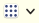
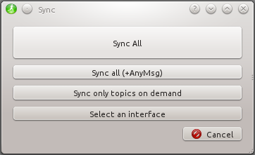

The host description panel displays the name and the time of the last update for the currently selected host. If the node manager finds a PNG image in node_manager_fkie/images (this path can be changed in settings tab in node manager) with the same name as the host, it is used as icon. The icon can be also changed by double click on it or by setting the ROS parameter /robot_icon to an image file.
Additionally the panel will be colorized with a color depend on the host name. This can be deactivated on the settings panel.

The host description panel contains additional buttons to update the state of the host or run ROS tools:
|
This symbol is only visible, if /use_sim_time parameter is set to True. |
|
for remote hosts the usename can be changed. This box is only visible for remote hosts. |
|
Change time on remote host. |
| requests the current state of the ROS master. | |
| opens a dialog to run a ROS node without a configuration. This node is launched in a dedicated terminal session using the screen tool, so you can monitor its output if necessary. | |
 |
runs the rqt tools (Console, Logger Level, TF Tree, Ros Graph and rqt_gui) which are connected to the ROS master on the selected host. |
| enables or disables the ROS Master synchronization on the selected host using synchronisation dialog with additional options. For full list of synchronization options see master_sync  |